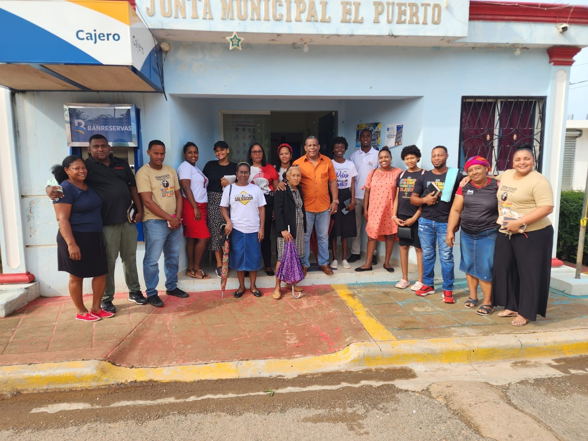

El Ministerio de Evangelismo de nuestra iglesia tiene como propósito primordial cumplir la Gran Comisión, llevando el mensaje transformador de Jesucristo a nuestra comunidad y a aquellos que no lo conocen. Nos esforzamos por ser la voz de esperanza, compartiendo las buenas nuevas de salvación, sanidad y restauración. Creemos en el poder del evangelio para cambiar vidas y traer reconciliación con Dios.
Trabajamos para alcanzar almas de diversas maneras, incluyendo:
Ofrecemos oportunidades para que todos participen en la difusión del evangelio:
Una guía para la presentación del evangelio a los que no conocen a Dios.
Este proyecto nace con un solo propósito: ayudarte a descubrir, comprender y vivir el mensaje del amor de Dios de forma sencilla y auténtica. Olvida las palabras difíciles y los formalismos irreales. Aquí hablamos de una relación real con Jesús, de lo que Él hizo por ti y de lo que puedes hacer hoy para conectar con Él. Dentro encontrarás páginas sencillas, explicaciones claras y un diseño pensado para que te sientas cómodo. No importa tu historia, tus preguntas o lo que pienses… este es un espacio abierto, honesto, lleno de esperanza. ¿Estás listo para dar un paso? Aquí está tu guía, sin rodeos, sin complicaciones. Diseñado por Nestor Urias Castillo Abreu, para ti y con la ayuda de Dios.
Presiona AquíBienvenido a El Plan de Salvación, un lugar pensado para ti, donde podrás conocer el amor inmenso que Dios tiene por cada uno de nosotros. Aquí no se trata de religión, sino de una relación real y viva con Jesús, quien dio su vida por amor y te ofrece una nueva oportunidad para empezar de nuevo. En este espacio encontrarás explicaciones sencillas sobre cómo acercarte a Dios, qué significa aceptar a Cristo y cómo comenzar una vida diferente, llena de esperanza y propósito. ✨ Dios te ama. Su plan de salvación es para ti. Y este puede ser el día en que todo cambie.
Presiona Aquí